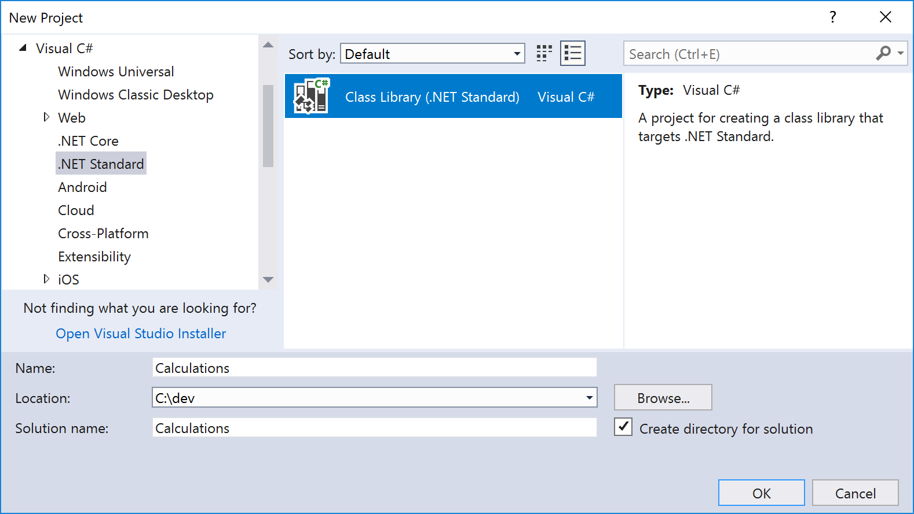
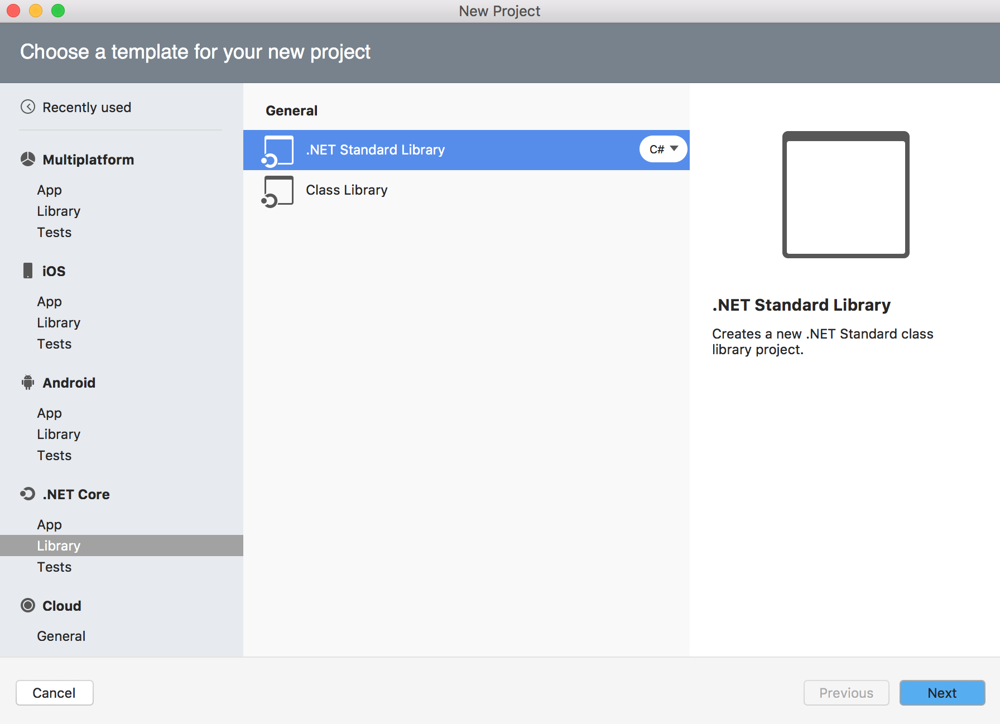
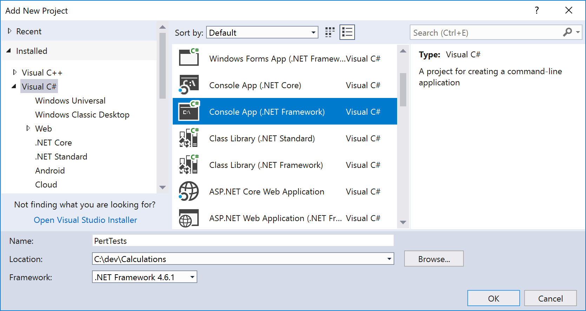
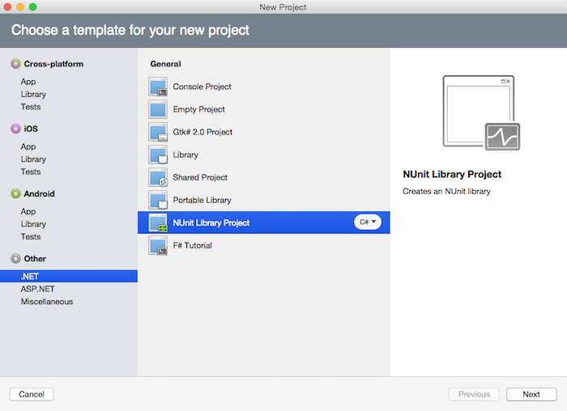
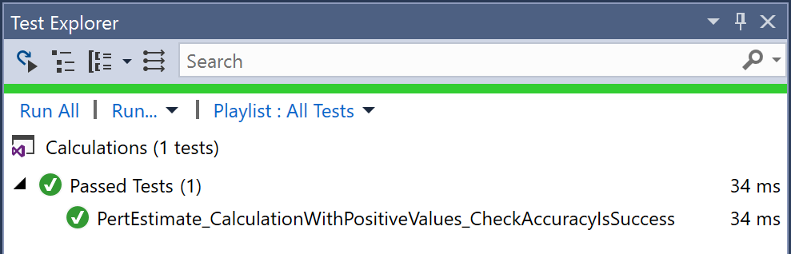
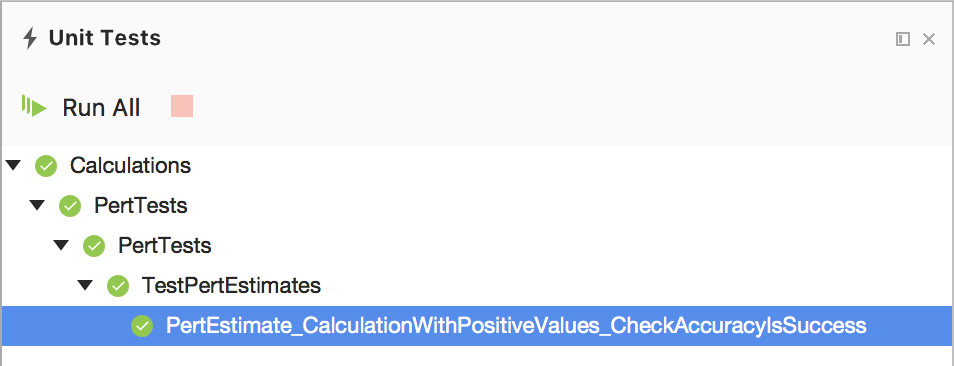

Duration
15 minutes
Lab Goals
The primary goal of this exercise is to demonstrate the use of NUnit with Visual Studio. This is a demonstration done by the instructor, but the exercise instructions are listed here in order to perform the tests on your own.
This will go through the process of creating a unit test and run the unit test locally to give you a taste of how unit tests are created and executed. To create unit tests in Visual Studio, we begin by creating a NUnit Library Project. While we often create new solutions for projects, a better idea would be to add a new Test project to an existing solution.
As mentioned in the lecture, there are a few different ways to create unit test projects. Visual Studio has several built-in project templates you can use. Since we are going to be testing business logic in this example, we will use the full NUnit project type.
This will go through the process of creating a unit test and running the unit test locally to give you a taste of how unit tests are created and executed. To create unit tests in Visual Studio, we need to begin by creating a library to house our NUnit project. While we often create new solutions for projects, a better idea would be to add a new Test project to an existing solution.
As mentioned in the lecture, there are a few different ways to create unit test projects. Visual Studio has several built-in project templates for other testing frameworks you can use. Since we are going to be testing business logic with NUnit in this example, we will set up a new class library to use the NUnit framework.
Required Assets
There is a completed version of the solution in the Exercise 1 folder if you'd like to compare your results, or just run the test.
Steps
Lets start by creating the logic for our application by creating a new solution with a single class library in the solution. In this solution we will create a single class library that contains a class that calculates a PERT estimate based on the best case, worst case and expected case of a project task.
-
Create a New Solution with a .NET Standard Class Library as the first project, you can find this template under
C# > .NET Standard > Class Library (.NET Standard). .NET Core > Library > .NET Standard Library. Name it Calculations.  -
Rename the single C# source file to PertEstimate.cs. You can do this by right-clicking on the class
file in the Solution Explorer and selecting Rename name and selecting Refactor > Rename . This will also allow you to rename the source file at the same time, which is convenient. -
Add the following static method to the file. This is what we will be testing.
public static double Estimate(double likelyAmount, double bestCaseAmount, double worstCaseAmount) { return (likelyAmount * 4 + bestCaseAmount + worstCaseAmount) / 6; } -
Next, let's add our unit test project. Right click your solution in Solution Explorer and select Add > New Project.... Next, let's add our unit test project. Right click on your Solution in Visual Studio for Mac and select Add > Add New Project. -
From the Visual C# section select the Class Library (.NET Framework) template. Name it PertTests and add that project to your solution. From the Other > .NET section select the NUnit Library Project and add that project to your solution, name it PertTests. This will create your test project as well as your first test fixture.  - To get our new project ready for test use, we need to add two new NuGet packages. Right-click the project and choose Manage NuGet Packages....
- In the Browse section, search for "NUnit" and install the latest NUnit and NUnit3TestAdapter packages. With the right infrastructure packages in place, we can start writing tests.
- Rename the included source file to Test.cs and open it.
- Open the new test projects only class file: Test.cs.
-
Lets create our first unit test to test our
Estimatefunctions results. Replace the existing class file's code with this code:using Calculations; using NUnit.Framework; namespace PertTests { [TestFixture] public class TestPertEstimates { [Test] public void PertEstimate_CalculationWithPositiveValues_CheckAccuracyIsSuccess () { // Arrange double likelyAmount = 20; double bestCaseAmount = 12; double worstCaseAmount = 40; double estimatedResult = 22; // Act double actualAmount = PertEstimate.Estimate (likelyAmount, bestCaseAmount, worstCaseAmount); // Assert Assert.AreEqual (estimatedResult, actualAmount); } } } -
This is a
TestFixturenamed TestPertEstimates to indicate the system under test, which this class is intended to test. It has a method with the[Test]attribute. These attributes tell NUnit (and the Visual Studio Test Explorer) which methods to run as tests. Each method that you add with the[Test]attribute will automatically become an additional test in your unit test project.You can see that we are following the same model of Arrange > Act > Assert to test that our class follows the core functionality that we need. All your tests should follow this pattern and you should make sure to name your tests appropriately with long, descriptive names so you can tell at a glance what is being tested and what the result should be.
-
Since our test calls the PERT logic in our class library, add a project reference for the test project to use the Calculations project. This will allow us to call the
PertEstimate.Estimatemethod.Right-click the References node of your test project in the Solution Explorer and choose Add Reference.... Select Calculations under the Projects section and click OK.
Right-click the References node of your test project in the Solution pad and choose Edit References.... Select Calculations under the Projects tab and click OK.
- Open the Test Explorer from the Visual Studio menu: Test > Windows > Test Explorer.
- Build your PertTests project. If you haven't already built your test project at least once, Test Explorer may not show any tests yet.
-
Inside Test Explorer, click Run All to run your new test. (If you have several tests later, you can also select specific tests to run.) Test Explorer should show our PertEstimate_CalculationWithPositiveValues_CheckAccuracyIsSuccess test with a green check indicating the test passed.

-
From the Visual Studio menu select View > Pads > Unit Tests. This will display the Unit Tests in your current solution and give you the ability to run or debug unit tests. You can choose to run all the tests by clicking the Run All option, or to run or debug a single test or the tests in a class or namespace, right click on the option and select Run or Debug.
Note: The Debug choice allows you to debug a test - this can be very helpful when a test is failing and you cannot determine the cause.
-
Let's run the test in the Unit Tests tab to see the outcome. Right-click on the Unit Test class in the Unit Tests pad to run the unit test, it should pass and show a green (OK) response.

Summary
Congratulations, you have successfully run and created a unit test with NUnit.